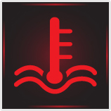
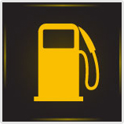

- 1466. Szabad-e a jármű motorját zárt helyiségben hosszabb ideig működtetni? #703240
- Nem, mert a kipufogógázban lévő szén-monoxid belélegezve rosszullétet, súlyos esetben halált okozhat.
- Igen, mert a kipufogógázban nincsenek mérgező, káros anyagok.
- Igen, de csak akkor, ha a hanghatás mások számára nem zavaró.
- Igen, ha a motor ez idő alatt csak alapjáraton működik.
- Igen, de csak akkor, ha a járművezető előzetesen üresbe kapcsolta a jármű sebességváltóját.
- 1467. Lemerült akkumulátor esetén szabad-e a katalizátoros gépjármű motorját behúzatással (betolással) beindítani? #703241
- Nem, mert a katalizátor károsodhat, tönkremehet.
- Igen, mert ez a katalizátor élettartamát nem befolyásolja.
- Igen, mert másképp nem lehet ezt a járművet beindítani.
- Igen, ha előzetesen a katalizátor kapcsolóját kikapcsolták.
- Igen, de csak akkor, ha a behúzatást a nyomó- és húzóerók felvételére alkalmas vontatórúddal végzik.
- 1468. Ha a motor üzemi hőmérséklete nem éri el a 80 Celsius fokot, ... #703288
- akkor a motor teljesítménye csökken, fogyasztása nő, kenése romlik.
- akkor a hűtőrendszer kiegyenlítő tartálya kiürült, után kell tölteni.
- akkor tovább közlekedni nem szabad, azonnal szakszervízhez kell fordulni.
- 1469. Mi a teendő, ha a műszerfalon kigyullad a hűtőfolyadék túlmelegedésére figyelmeztető ellenőrző lámpa? #703289
- A járművel célszerű megállni, és néhány percig alapjáraton járatva lehetséges a hűtőfolyadékot az üzemi hőmérsékletre visszahűteni.
- Nagyobb sebességgel kell haladni, így a menetszél a hűtőn átáramolva visszahűti az üzemi hőmérsékletre a hűtőfolyadékot.
- A járművel azonnal meg kell állni, és haladéktalanul hideg hűtőfolyadékot kell a kiegyenlítő tartályba önteni.
- 1470. Miért szükséges a jármű motorjának hűtése? #703339
- A jármű motorjának ideális, üzemi hőmérsékleten tartása miatt.
- Mert nagy hőmérsékleten az üzemanyag kémiailag átalakul, és ez akadályozza a megfelelő égést.
- A motor hirtelen hőterhelésének megakadályozására.
- 1471. Milyen hátrányai vannak a hideg (nem üzemmeleg) motorral való közlekedésnek? #703340
- A motor teljesítménye csökken, kenése romlik, üzemanyag fogyasztása nő.
- Ha az utastér fűtése nem szükséges, akkor nincs hátránya a hideg (nem üzemmeleg) motorral való közlekedésnek.
- A jármű motorja rángat, az utazás kényelmetlen.
- 1472. Kell-e ellenőrizni a hűtőfolyadék mennyiségét a zárt rendszerű hűtő kiegyenlítő tartályában? #703341
- Igen, legalább havonta egyszer. A folyadékszintnek a min. és max. jelzések között kell lennie.
- Igen, minden elindulás előtt ellenőrizni kell.
- Nem szükséges, a zárt rendszerű hűtő esetén a folyadékszint nem változik.
- 1473. A motorkerékpár motorjának hűtése általában... #703342
- levegő- vagy vízhűtéses lehet.
- csak levegőhűtéses lehet.
- csak vízhűtéses lehet.
- 1474. Mi a sebességváltó feladata? #716988
- A motor és a hajtott kerekek fordulatszám tartományainak összehangolása, a menetellenállásoknak megfelelő hajtónyomaték beállítása, illetve hátramenet biztosítása.
- A hajtónyomaték elosztása a jármű hajtott kerekei között, valamint a kétoldali hajtott kerekek fordulatszám különbségének lehetővé tétele kanyarban haladva.
- Nehéz terepen a jármű összkerékhajtásának biztosítása.
- A hajtott kerekek kipörgésének megakadályozása csúszós úton.
- 1475. Lehet-e a megfelelő állapotú tengelykapcsoló működtetésének holtjátéka? #716990
- Igen, ez a tengelykapcsoló működtetés konstrukciójának természetes velejárója.
- Nem, ez minden esetben a tengelykapcsoló tárcsa túlzott kopására utal.
- Nem, mert a működtető rendszer minden holtjátékot automatikusan utánállít, így a pedál érintésekor a tengelykapcsoló azonnal kiemel.
- Nem, mert ez a tengelykapcsoló pedál fellazulására utal, ami nagyon veszélyes.
- 1476. Mi a tengelykapcsoló feladata? #716993
- Oldható kapcsolatot biztosít a motor és a sebességváltó között.
- Nem oldható kapcsolatot biztosít a motor és a sebességváltó között.
- Segítségével a motor egyes hengerei leválaszthatóvá válnak a többiről.
- Csúsztatásával a jármű haladási sebessége széles tartományban változtatható.

- 1477. Mire figyelmeztet a képen látható piros színű lámpa? #717011
- A motor kenési rendszerében nem megfelelő az olajnyomás.
- Kevés az üzemanyag mennyisége.
- Az úton olajszennyeződés van, ezért megcsúszhatnak a kerekek.
- Alacsony a motorolaj szintje.

- 1478. Mire utalhat, ha a képen látható piros visszajelző lámpa folyamatosan világít, vagy villog? #717013
- A hűtőfolyadék túl magas hőmérsékletére és/vagy túl alacsony szintjére.
- A hűtőfolyadék túl alacsony hőmérsékletére és/vagy túl magas szintjére.
- A motorolaj túl alacsony hőmérsékletére és/vagy túl magas szintjére.
- A fékfolyadék túl magas hőmérsékletére és/vagy túl alacsony szintjére.

- 1479. Mit jelent a képen látható visszajelző lámpa felgyulladása? #717014
- A gépjármű üzemanyagtartályában már csak a tartalék üzemanyag mennyiség áll rendelkezésre, ezért rövid időn belül tankolni kell.
- Azonnal segítséget kell kérni, mert néhány percen belül kifogy az üzemanyag.
- Meghibásodott a gépkocsi üzemanyagrendszere.
- Meghibásodott a jármű kipufogógáz-tisztító berendezése (katalizátora).

- 1480. Mit jelent a képen látható visszajelző? #723544
- A motorolaj szintje túl alacsony.
- Kevés az üzemanyag mennyisége.
- A hűtőfolyadék szintje túl alacsony.
- A motor kenési rendszerében nem megfelelő az olajnyomás.